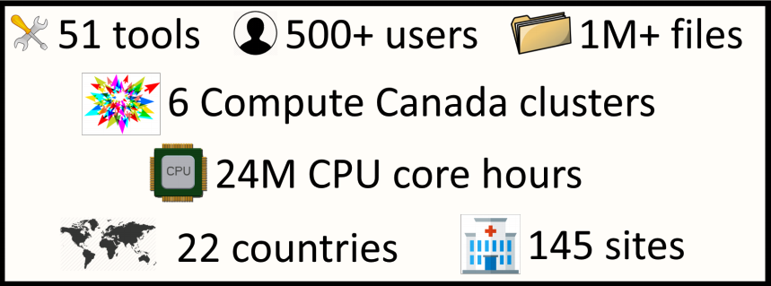
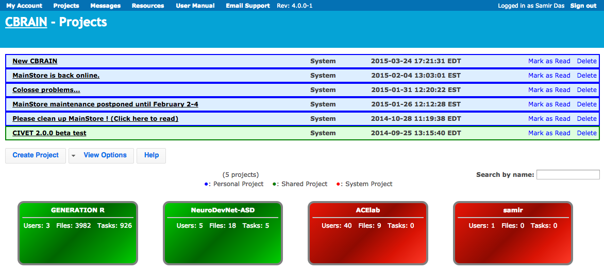
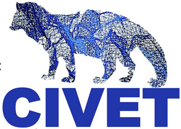
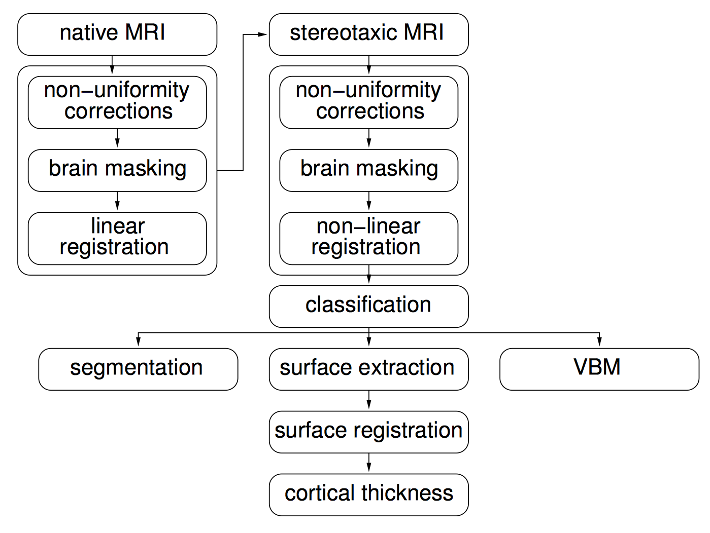
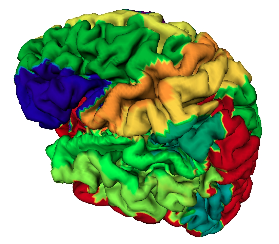
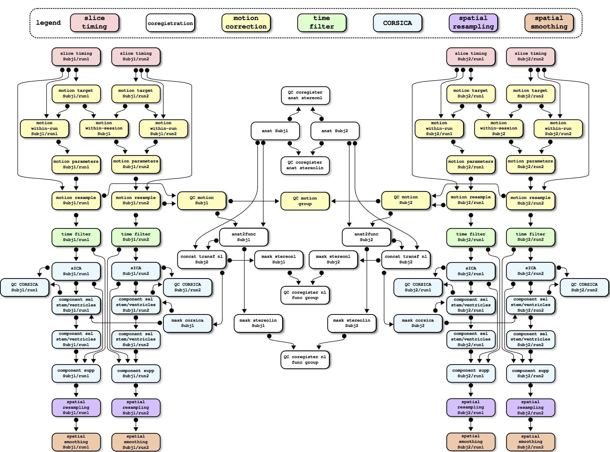
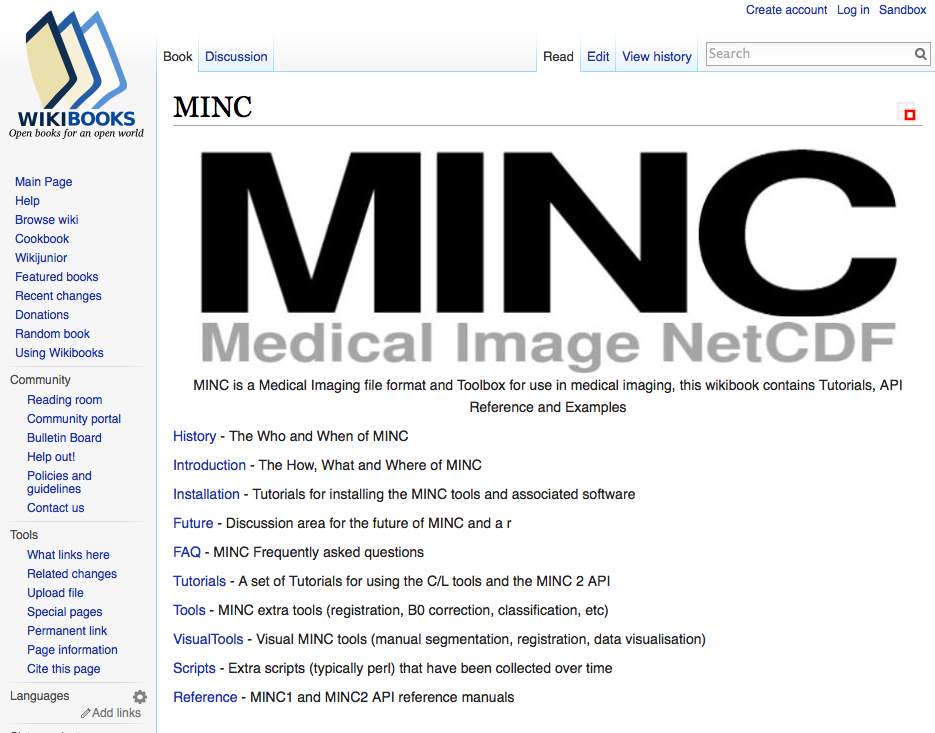

What’s involved?
Longitudinal Acquisition, Storage and Curation, Interoperability, Reproducibility, Transfer, Anonymization, Security, Privacy, Ethics, APIs, Validation, Quality Control, Protocol Checking, Preprocessing, Analysis, HPC, Provenance, Ontological Standarization, Data Harmonization, Upgrades, Maintenance, Bug Fixes, User Interface, Javascript, Bootstrap, Tracking, Extensibility, Data Management, Summary Statistics, Workflows, Development, Tool Integration, Data Sharing, Download, Multi-Modal Linking, Querying, Image Processing, Visualization, Networking, System Administration, Partnerships, Funding, HR ...No big deal!
LORIS-CBRAIN INTEGRATION
Benefits vs Challenges

WHAT IS CBRAIN?

|
|
What does CBRAIN do?
..enables distributed execution of software pipelines
..aggregates multiple distributed file systems into uniform view
NOW
611 users; 199 international
191 sites
299 countries
CBRAIN Computing Resources
CBRAIN portal
TRY ME!
CBRAIN - Tools
Conversion tools:
MINC ↔ NIfTI, DICOM → MINC, DICOM → NIfTI, Analyze → HRRT, ASPIRO → MINC, DICOM → HRRT, MINC1 ↔ MINC2
Image Processing tools:
- Civet, CivetCombiner & CivetQC
- FSL: bedpostx, bet, fast, feat, first flirt, melodic, probtrackx
- FreeSurfer: recon-all, and recon-all longitudinal
- NIAK
- Several other project specific tools
|
The CIVET project was initiated in order to create an automated, easy-to-use human brain-imaging pipeline that makes use of state-of-the-art software tools developed by researchers at the BIC for the fully-automated processing and analysis of large MR data sets, including the extraction and analysis of cortical surfaces from MR images, as well as many other volumetric and corticometric functions.  |
Fully automated anatomical pipeline Parallel processing Can handle large datasets Includes QC mechanisms >10 yrs active development Publication in process |

|
|  |  |
NIAK
http://niak.simexp-lab.org/
CBRAIN - Functionality
Non-expert users can easily leverage Compute Canada
Anyone can request an account (best effort support):
cbrain-support.mni@mcgill.ca
CBRAIN code is now public: https://github.com/aces/cbrain
Includes several structural and functional MRI tools
Continued integration of new tools as per community needs
|  |
The MINC file format and toolbox was originally conceived, written and released by Peter Neelin in 1992. |
Install MINC - BIC systems
By default binaries are available at /usr/local/mni
Better to use /usr/local/bic
A much more up-to-date version is installed in /ipl/quarantine/std/x86_64/1.0
To execute: source /ipl/quarantine/std/x86_64/1.0/init.csh
Install MINC - Personal computers
For personal computers (incl. Macs): https://www.mcgill.ca/bic/resources/minc/minctoolkit
Two versions are mentioned: 1.0 and 1.9.2: install 1.0 version, which includes all the standard MINC tools with support for MINC2.
Main difference: ITK-based software is also included.
MINC resources
- minc-users mailing list:
http://www.bic.mni.mcgill.ca/mailman/listinfo/minc-users - Current documention on wikibooks:
http://en.wikibooks.org/wiki/MINC - Current combined release:
http://www.bic.mni.mcgill.ca/ServicesSoftware/ServicesSoftwareMincToolKit - Github (for bug report and source code)
https://github.com/BIC-MNI/minc-toolkit/
CBRAIN GITHUB
https://github.com/aces/cbrain
NITRC: www.nitrc.org/projects/cbrain

|
Thank you!Acknowledgements: Alan Evans, Alex Zijdenbos, Dario Vins, Jonathan Harlap, Matt Charlet, Andrew Corderey, Sebastian Muehlboeck, Reza Adalat, Louis Collins, Vladimir Fonov, Marc Rousseau, Mia Petkova, Rathi Gnanasekaran, David Brownlee, Tarek Sherif, Pierre Rioux, Nic Kassis, Leigh MacIntyre, Claude Lepage, Ilana Leppert, Natasha Beck, Tristan Glatard, Bert Vincent, Lindsay Lewis, Najma Mahani, Elodie Portales-Casamar, Alden Woodward, Sylvain Milot, Jean Francois Malouin, Sylvain Baillet, Daniel Kroetz, Martin Weiss, Mathieu Desrosier, Jason Karamchandani, Amit Bar-Or, Ted Fon, John Brietner, Derek Lo, Patrick Bermudez, Chris Steele, Pamela Patterson and one of my favourites: Pierre Bellec! LORIS team on left |